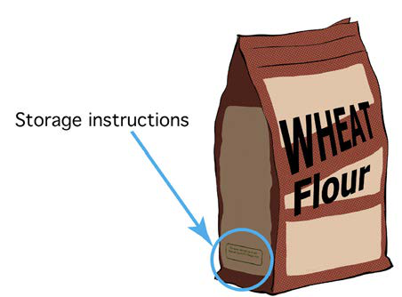

Activity 13
Observe different products found at home and school. Then, check on the following:
- 1. Expiration;
- 2. Ingredients;
- 3. Instructions for using the product; and
- 4. Storage methods.

Observe different products found at home and school. Then, check on the following: